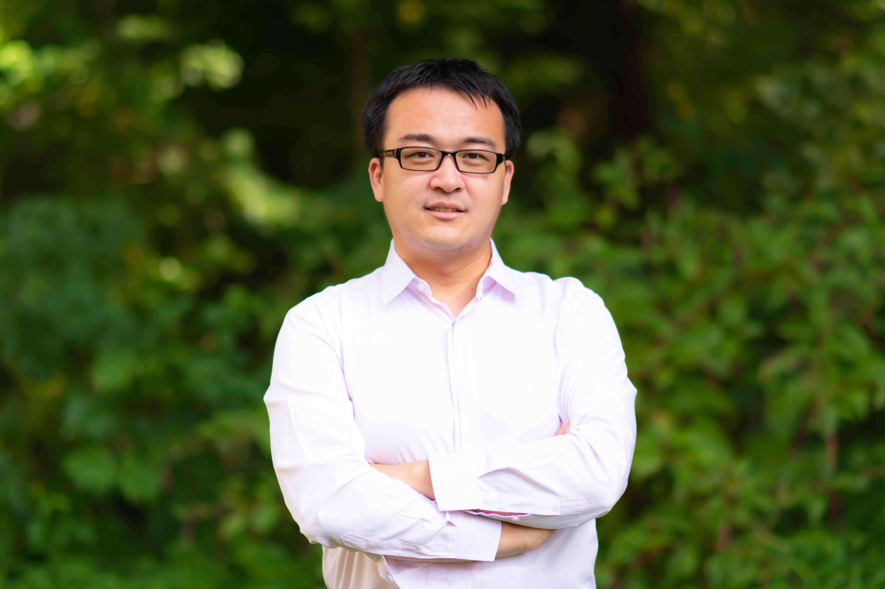

|  | Xu Liu 刘旭Assistant Professor
Latest CV (updated on Apr 2020)
|
|---|
Dr. Xu Liu joined Computer Science Department of North Carolina State University in August 2020. Before joining NCSU, Dr. Liu has been working as an assistant professor at The College of William and Mary since August 2014. He received Ph.D. from Rice University in 2014, working with Dr. John Mellor-Crummey. Before coming to Rice, he completed his master degree from Institute of Computing Technology, Chinese Academy of Sciences, and bachelor degree from Beihang University.
Dr. Xu Liu’s research interests lie in parallel computing, compiler techniques, and systems. He focuses on developing tool infrastructures to measure and analyze program executions on emerging parallel architectures. The insights obtained can be used to optimize code performance, which not only improves productivities but also reduces energy consumption.
We always have openings for self-motivated students who are interested in doing system research.
Research Artifacts
Awards
- 2020: Best Paper Finalist, SC'20
- 2020: Phi Beta Kappa John D Rockefeller Jr. Faculty Award for the Advancement of Scholarship
- 2019: IEEE-CS TCHPC Early Career Researchers Award for Excellence in High Performance Computing
- 2019: Jeffress Trust Award
- 2019: ACM SIGPLAN Research Highlight
- 2019: Distinguished Paper Award, ICSE'19
- 2019: Best Paper Award, PPoPP'19
- 2018: Best Paper Finalist, IISWC'18
- 2018: ASPLOS'18 paper nominated to ACM SIGs for CACM Research Highlights
- 2018: Google Faculty Research Award
- 2018: Best Paper Award, PPoPP'18
- 2017: Best Paper Finalist, ASPLOS'17
- 2017: HiPEAC Paper Award
- 2015: Best Paper Award, SC'15
- 2013: Award of Excellence for the internship at Samsung, Austin, TX
- 2013-2014: The Numerical Algorithms Group (NAG) Fellowship, Rice University
- 2012-2013: BP Fellowship, Rice University
- 2011-2012: Schlumberger Fellowship, Rice University
Students
- Probir Roy (Ph.D., graduated in 2019. First employment: assistant professor at University of Michigan-Dearborn)
- Qingsen Wang (Ph.D., graduated in 2019. First employment: Google)
- Shasha Wen (Ph.D., graduated in 2019. First employment: Amazon)
- Du Shen (Ph.D. candidate, Started in Spring 2014)
- Hao Xu (Ph.D. candidate, Started in Fall 2014)
- Pengfei Su (Ph.D. candidate, Started in Fall 2016)
- Bolun Li (Ph.D. candidate, Started in Fall 2017)
- Jialiang Tan (Ph.D. candidate, Started in Fall 2019)
- Yueming Hao (Ph.D. candidate, Started in Fall 2019)
- Qidong Zhao (visiting scholar, Started in Fall 2019)
Recent and Selected Publications (Full List)
[SC'20] "DRCCTPROF: A Fine-grained Call Path Profiler for ARM-based Clusters", Qidong Zhao, Xu Liu, Milind Chabbi, The International Conference for High Performance Computing, Networking, Storage and Analysis, Nov 15-20, 2020, Atlanta, GA, USA. Best Paper Finalist
[SC'20] "GVPROF: A Value Profiler for GPU-based Clusters", Keren Zhou, Yueming Hao, John Mellor-Crummey, Xiaozhu Meng, Xu Liu, The International Conference for High Performance Computing, Networking, Storage and Analysis, Nov 15-20, 2020, Atlanta, GA, USA. (Under revision)
[SC'20] "Zerospy: Exploring the Software Inefficiencies with Redundant Zeros", Xin You, Hailong Yang, Zhongzhi Luan, Depei Qian, Xu Liu, The International Conference for High Performance Computing, Networking, Storage and Analysis, Nov 15-20, 2020, Atlanta, GA, USA.
[SC'20] "ScalAna: Automating Scaling Loss Detection with Graph Analysis", Yuyang Jin, Haojie Wang, Teng Yu, Xiongchao Tang, Torsten Hoefler, Xu Liu, Jidong Zhai, The International Conference for High Performance Computing, Networking, Storage and Analysis, Nov 15-20, 2020, Atlanta, GA, USA.
[TOPC'20] "Efficient Abortable-locking Protocol for Multi-level NUMA Systems: Design and Correctness", Milind Chabbi, Abdelhalim Amer, Xu Liu, ACM Transactions on Parallel Computing, 2020.
[ICS'20] "What Every Scientific Programmer Should Know About Compiler Optimizations?", Jialiang Tan, Shuyin Jiao, Milind Chabbi, Xu Liu, The 34th ACM International Conference on Supercomputing, Jun 29 - Jul 2, 2020, Barcelona, Spain. Acceptance ratio: 30% (40/132).
[CGO'20] "ATMem: Adaptive Data Placement in Graph Applications on Heterogeneous Memories", Yu Chen, Ivy B. Peng, Zhen Peng, Xu Liu, Bin Ren, The 2020 International Symposium on Code Generation and Optimization, Feb 22-26, 2020, San Diego, CA, USA. Acceptance ratio: 27% (26/95).
[TPDS'19] "Evaluating Modern GPU Interconnect: PCIe, NVLink, NV-SLI, NVSwitch and GPUDirect", Ang Li, Shuaiwen Leon Song, Jieyang Chen, Jiajia Li, Xu Liu, Nathan Tallent, and Kevin Barker, IEEE Transactions on Parallel and Distributed Systems, 2019.
[SC'19] "Pinpointing Performance Inefficiencies via Lightweight Variance Profiling", Pengfei Su, Shuyin Jiao, Milind Chabbi, Xu Liu, The International Conference for High Performance Computing, Networking, Storage and Analysis, Nov 17-22, 2019, Denver, CO, USA. Acceptance ratio: 25.3% (87/344).
[ESEC/FSE'19] "Pinpointing Performance Inefficiencies in Java", Pengfei Su, Qingsen Wang, Milind Chabbi, Xu Liu, The 27th ACM Joint European Software Engineering Conference and Symposium on the Foundations of Software Engineering , Aug 26 - 30, 2019, Tallinn, Estonia. Acceptance ratio: 24% (74/303).
[ICS'19] "Can We Trust Profiling Results?", Hao Xu, Qingsen Wang, Shuang Song, Lizy John, Xu Liu, The 33rd ACM International Conference on Supercomputing, Jun 26 - Jun 28, 2019, Phoenix, AZ. Acceptance ratio: 23% (45/193).
[ICSE'19] "Redundant Loads: A Software Inefficiency Indicator", Pengfei Su, Shasha Wen, Hailong Yang, Milind Chabbi, Xu Liu, The International Conference on Software Engineering, May 25 - Jun 1, 2019, Montreal, Canada. Acceptance ratio: 21% (109/529). Distinguished Paper Award.
[PPoPP'19] "Lightweight Hardware Transactional Memory Profiling", Qingsen Wang, Pengfei Su, Milind Chabbi, Xu Liu, The 24th ACM SIGPLAN Symposium on Principles and Practice of Parallel Programming, Feb 16-20, 2019, Washington, D.C.. Acceptance ratio: 19% (29/152). Best Paper Award.
[HPCA'19] "Featherlight Reuse-distance Measurement", Qingsen Wang, Milind Chabbi, Xu Liu, The 25th IEEE International Symposium on High-Performance Computer Architecture, Feb 16-20, 2019, Washington, D.C.. Acceptance ratio: 19.7% (46/233). U.S. patent application No. 16/440,405
[CGO'19] "Transforming Query Sequences for High-Throughput B+ Tree Processing on Many-core Processors", Ruiqin Tian, Junqiao Qiu, Zhijiao Zhao, Xu Liu, Bin Ren, The 2019 International Symposium on Code Generation and Optimization, Feb 16-20, 2019, Washington, D.C..
[VLDB'19] "Start Late or Finish Early: A Distributed Graph Processing System with Redundancy Reduction", Shuang Song, Xu Liu, Qinzhe Wu, Andreas Gerstlauer, Tao Li, Lizy John, The Forty-fifth International Conference on Very Large Data Bases, Aug 26-30, 2019, Los Angeles, CA, USA.
[IISWC'18] "Tartan: Evaluating Modern GPU Interconnect via a Multi-GPU Benchmark Suite", Ang Li, Shuaiwen Leon Song, Jieyang Chen, Xu Liu, Nathan Tallent, Kevin Barker, 2018 IEEE International Symposium on Workload Characterization, Sep 30-Oct 2, 2018, Raleigh, NC, USA. Nominated as Best Paper Award.
[TPDS'18] "LWPTool: A Lightweight Profiler to Guide Data Layout Optimization", Chao Yu, Probir Roy, Yuebin Bai, Hailong Yang, Xu Liu, IEEE Transactions on Parallel and Distributed Systems, 2018. (Chao and Probir are both co-first authors.)
[ICS'18] "ProfDP: A Lightweight Profiler to Guide Data Placement in Heterogeneous Memory Systems", Shasha Wen, Lucy Cherkasova, Felix Xiaozhu Lin, Xu Liu, The 32nd ACM International Conference on Supercomputing, Jun 12-15, 2018, Beijing China. Acceptance ratio: 18.7% (36/193).
[ICS'18] "Towards Efficient SpMV on Sunway Many-core Architectures", Changxi Liu, Biwei Xie, Xin Liu, Wei Xue, Hailong Yang, Xu Liu, The 32nd ACM International Conference on Supercomputing, Jun 12-15, 2018, Beijing China. Acceptance ratio: 18.7% (36/193).
[TACO'18] "NUMA-Caffe: NUMA-Aware Deep Learning Neural Networks", Probir Roy, Shuaiwen Leon Song, Sriram Krishnamoorthy, Abhinav Vishnu, Dipanjan Sengupta, Xu Liu, ACM Transactions on Architecture and Code Optimization, 2018.
[ASPLOS'18] "Watching for Software Inefficiencies with Witch", Shasha Wen, Xu Liu, John Byrne and Milind Chabbi, The 23rd International Conference on Architectural Support for Programming Languages and Operating Systems, Mar 24-28, 2018, Williamsburg, VA. Acceptance ratio: 17.5%. ACM SIGPLAN Research Highlight. Nominated to ACM SIGs for CACM Research Highlights.
[PPoPP'18] "Featherlight On-the-Fly False-sharing Detection", Milind Chabbi, Shasha Wen and Xu Liu, The 23rd ACM SIGPLAN Symposium on Principles and Practice of Parallel Programming, Feb 24-28, 2018, Vienna, Austria. Acceptance ratio: 20%. Best Paper Award.
[PMAM'18] "An Evaluation of Vectorization and Cache Reuse Tradeoffs on Modern CPUs", Du Shen, Milind Chabbi and Xu Liu, The 2018 International Workshop on Programming Models and Applications for Multicores and Manycores, co-located with PPoPP'18, Feb 24-28, 2018, Vienna, Austria.
[CGO'18] "Lightweight Detection of Cache Conflicts", Probir Roy, Shuaiwen Leon Song, Sriram Krishnamoorthy and Xu Liu, The 2018 International Symposium on Code Generation and Optimization, Feb 24-28, 2018, Vienna, Austria. Acceptance ratio: 28%.
[CGO'18] "CUDAAdvisor: LLVM-based Runtime Profiling for Modern GPUs", Du Shen, Shuaiwen Leon Song, Ang Li and Xu Liu, The 2018 International Symposium on Code Generation and Optimization, Feb 24-28, 2018, Vienna, Austria. Acceptance ratio: 28%.
[CGO'18] "CVR: Efficient SpMV Vectorization on X86 Processors", Biwei Xie, Jianfeng Zhan, Zhen Jia, Wanling Gao, Lixin Zhang and Xu Liu, The 2018 International Symposium on Code Generation and Optimization, Feb 24-28, 2018, Vienna, Austria. Acceptance ratio: 28%.
[IPDPS'17] "Dr-BW: Identifying Bandwidth Contention in NUMA Architectures with Supervised Learning", Hao Xu, Shasha Wen, Alfredo Gimenez, Todd Gamblin and Xu Liu, The 31st IEEE International Parallel and Distributed Processing Symposium, May 29-Jun 2, 2017, Orlando, Florida, USA. Acceptance ratio: 23%.
[ASPLOS'17] "RedSpy: Exploring Value Locality in Software", Shasha Wen, Milind Chabbi and Xu Liu, The 22nd International Conference on Architectural Support for Programming Languages and Operating Systems, Apr 8-12, 2017, Xi'an, China. Acceptance ratio: 17.4% (56/321). Best Paper Finalist (6 out of 56).
[ASPLOS'17] "FLEP: Enabling Flexible and Efficient Preemption on GPUs", Bo Wu, Xu Liu, Xiaobo Zhou and Changjun Jiang, The 22nd International Conference on Architectural Support for Programming Languages and Operating Systems, Apr 8-12, 2017, Xi'an, China. Acceptance ratio: 17.4% (56/321).
[ASPLOS'17] "Locality-Aware CTA Clustering For Modern GPUs", Ang Li, Shuaiwen Leon Song, Weifeng Liu, Xu Liu, Akash Kumar and Henk Corporaal, The 22nd International Conference on Architectural Support for Programming Languages and Operating Systems, Apr 8-12, 2017, Xi'an, China. Acceptance ratio: 17.4% (56/321). HiPEAC Paper Award.
[PPoPP'17] "An Efficient Abortable-locking Protocol for Multi-level NUMA Systems", Milind Chabbi, Halim Amer, Shasha Wen and Xu Liu, The 22nd ACM SIGPLAN Symposium on Principles and Practice of Parallel Programming, Feb 4-8, 2017, Austin, Texas, USA. Acceptance ratio: 22% (29/132).
[ISMM'16] "Characterizing Emerging Heterogeneous Memory", Du Shen, Xu Liu and Felix Xiaozhu Lin, The 2016 ACM SIGPLAN International Symposium on Memory Management, Jun 14, 2016, Santa Barbara, California, USA.
[HPDC'16] "SMT-Aware Instantaneous Footprint Optimization", Probir Roy, Xu Liu and Shuaiwen Leon Song, The 25th ACM international Symposium on High-Performance and Distributed Computing, May 31-Jun 4, 2016, Kyoto, Japan. Acceptance ratio: 15.5% (20/129).
[ASPLOS'16] "memif: Towards Programming Heterogeneous Memory Asynchronously", Felix Xiaozhu Lin and Xu Liu, The 21st International Conference on Architectural Support for Programming Languages and Operating Systems, Apr 2-6, 2016, Altanta, Georgia, USA. Acceptance ratio: 22% (53/240).
[CGO'16] "StructSlim: A Lightweight Profiler to Guide Structure Splitting", Probir Roy and Xu Liu, The 2016 International Symposium on Code Generation and Optimization, Mar 12-18, 2016, Barcelona, Spain. Acceptance ratio: 23% (25/108).
[CGO'16] "Cheetah: Detecting False Sharing Efficiently and Effectively", Tongping Liu and Xu Liu, The 2016 International Symposium on Code Generation and Optimization, Mar 12-18, 2016, Barcelona, Spain. (Tongping and Xu are both co-first authors.) Acceptance ratio: 23% (25/108).
[SC'15] "ScaAnalyzer: A Tool to Identify Memory Scalability Bottlenecks in Parallel Programs", Xu Liu and Bo Wu, The International Conference for High Performance Computing, Networking, Storage and Analysis, Nov 15-20, 2015, Austin, Texas, USA. Acceptance ratio: 22% (79/358). Best Paper Award.
[PACT'15] "Runtime Value Numbering: A Profiling Technique to Pinpoint Redundant Computations", Shasha Wen, Xu Liu and Milind Chabbi, The 24th International Conference on Parallel Architectures and Compilation Techniques, Oct 18-21, 2015, San Francisco, California, USA. Acceptance ratio: 21% (38/179).
[HotCloud'15] "Towards Hybrid Programming in Big Data", Peng Wang, Hong Jiang, Xu Liu, and Jizhong Han, The 7th USENIX Workshop on Hot Topics in Cloud Computing, July 6-7, 2015, Santa Clara, California, USA.
Ph.D. Publication
[PACT'14] "ArrayTool: A Lightweight Profiler to Guide Array Regrouping", Xu Liu, Kamal Sharma and John Mellor-Crummey, The 23rd International Conference on Parallel Architectures and Compilation Techniques, Aug 24-27, 2014, Edmonton, Alberta, Canada.
[PPoPP'14] "A Tool to Analyze the Performance of Multithreaded Programs on NUMA Architectures", Xu Liu and John Mellor-Crummey, The 19th ACM SIGPLAN Symposium on Principles and Practice of Parallel Programming, Feb 15-19, 2014, Orlando, Florida, USA.
[CGO'14] "Call Paths for Pin Tools", Milind Chabbi, Xu Liu and John Mellor-Crummey, The 2014 International Symposium on Code Generation and Optimization, Feb 15-19, 2014, Orlando, Florida, USA.
[SC'13] "A Data-centric Profiler for Parallel Programs", Xu Liu and John Mellor-Crummey, The International Conference for High Performance Computing, Networking, Storage and Analysis, November 17-22, 2013, Denver, Colorado, USA.
[ICS'13] "A New Approach for Performance Analysis of OpenMP Programs", Xu Liu, John Mellor-Crummey and Mike Fagan, 27th International Conference on Supercomputing, June 10-14, 2013, Eugene, Oregon, USA.
[ISPASS'13] "Pinpointing Data Locality Bottlenecks with Low Overhead", Xu Liu and John Mellor-Crummey, 2013 IEEE International Symposium on Performance Analysis of Systems and Software, April 21-23, 2013, Austin, Texas, USA.
[CGO'11] "Pinpointing Data Locality Problems Using Data-Centric Analysis", Xu Liu and John Mellor-Crummey, 2011 International Symposium on Code Generation and Optimization, April 2-6, 2011, Chamonix, France.
Teaching
- CSCI 780 Multi-core Computing [Fall 2018][Fall 2016]
- CSCI 652 Advanced Compiler Construction [Fall 2019][Spring 2018][Spring 2016][Fall 2014]
- CSCI 312 Principles of Programming Languages [Spring 2020][Spring 2019][Fall 2017][Spring 2017][Fall 2015][Spring 2015]
Professional Service
- PC Member: IPDPS'15, LCPC'15 (Poster Session), PPoPP'16 (ERC), ICPP'16, ICPADS'16, CCGRID'17, HPDC'17 (Poster Session), ICPP'17, ASPLOS'18, CGO'18, ICPP'18, ICPP'19, PPoPP'19, CGO'19, SC'19, ISMM'19, PPoPP'20, CGO'20, CC'20, HPCA'20, IPDPS'20, SC'21
- Program Chair: HIPS'16 (Colocated with IPDPS'16)
- Organization Committee: ASPLOS'18 (Local Arrangements Chair), PPoPP'20 (AE Committee Co-chair)
- Journal Reviewer: Concurrency and Computation: Practice and Experience, ACM Transactions on Architecture and Code Optimization (TACO), IEEE Transaction on Parallel and Distributed Systems (TPDS), Journal of Parallel and Distributed Computing (JPDC), IEEE Computer Architecture Letters
News :
11/2019: Received a Google gift.
09/2018: One paper got accepted to VLDB'19, which reduces the redundant computation in graph processing engines.
09/2018: Our IISWC paper on mutli-GPU benchmark suite Tartan is nominated as Best Paper. Try out Tartan.
08/2018: I was invited to give two talks at Intel performance brown bag. I hope these talks can influence the future Intel PMU design.
05/2018: ASPLOS'18 nominated our paper (Witch) to ACM SIGs for CACM Research Highlights.
04/2018: Witch (ASPLOS'18) got featured in the Morning Paper blog and also got discussed in a Chinese blog.
03/2018: Two papers accepted to ICS'18.
02/2018: Received Google Faculty Research Award.
02/2018: Our PPoPP'18 paper received the Best Paper Award.
01/2018: 1 paper accepted to PMAM located with PPoPP'18. We have demonstrated the tradeoff between SIMD and locality.
12/2017: 1 paper accepted to PPoPP'18. We have designed an extremely lightweight profiler to identify false sharing between threads and processes.
11/2017: 1 paper accepted to ASPLOS'18. We have designed a new profiling framework in this work.
10/2017: 3 papers accepted to CGO'18.
09/2017: SciDAC 4 got funded from DOE.
02/2017: Our RedSpy paper was nominated as the best paper at ASPLOS'17.
02/2017: We will hold a tutorial at CGO'17 about CCTLib.
01/2017: Our paper on leveraging machine learning techniques to understand bandwidth contention got accepted to IPDPS'17.
11/2016: OpenMP Tools API (OMPT) was accepted to OpenMP 5.0. I was involved in designing OMPT and the first performance tool based on it. Refer to our ICS'13 paper.
11/2016: Want to try a highly efficient abortable lock? Refer to our PPoPP'17 paper.
11/2016: Three papers got accepted to ASPLOS'17. Topics cover value profiling, GPU preemption, and GPU locality.
08/2016: A collaborative grant with Felix Lin (Purdue) is funded by NSF.
04/2016: Want to see the data placement in a real system with heterogeneous memory? Refer to our ISMM'16 paper.
03/2016: False sharing can improve performance!! Refer to our HPDC'16 paper.
11/2015: Our SC'15 paper received the Best Paper Award.
11/2015: Our paper on efficient data movement in heterogeneous memory got accepted to ASPLOS'16.
11/2015: Two papers got accepted to CGO'16.
08/2015: The first paper by my student was accepted to PACT'15.
07/2015: My first independent work was accepted to SC'15 and nominated as the best paper.
03/2015: A sole-PI NSF proposal was awarded.